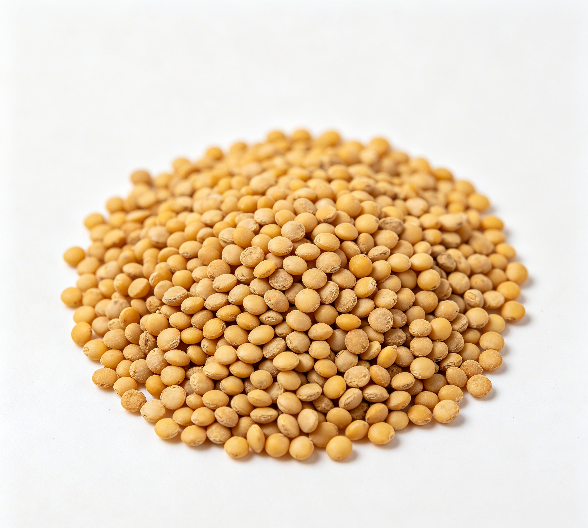

📋 基本信息
中文名黄芥子
拉丁名Brassica juncea (L.)
英文名Sinapis Semen
产地科属：十字花科（Brassicaceae）芸薹属（Brassica），拉丁学名Brassica juncea (L.) Czern. et Coss.。主产地：全国各地多有栽培，药材主产河南、安徽、山东、陕西、四川等地；华东地区药用习惯用黄芥子，华北、东北多习用白芥子。【《中国药典》及《中华本草》】
性状黄芥子：种子较小，直径1～2mm。表面黄色至棕黄色，少数呈暗红棕色。研碎后加水浸湿，则产生辛烈的特异臭气。（附药典对白芥子的描述以资区别：白芥子呈球形，直径1.5～2.5mm，表面灰白色至淡黄色，具细微网纹，有明显的点状种脐，种皮薄而脆，破开后内有白色折叠的子叶，有油性，气微，味辛辣。）【《中国药典》2020年版一部'芥子'项】
用法用量3～9g。外用适量（研末调敷，可作发泡引赤外治）。【《中国药典》2020年版一部'芥子'项】
贮藏置通风干燥处，防潮。【《中国药典》2020年版一部'芥子'项】
☯ 传统属性
四气温
五味辛
归经肺经
功能主治温肺豁痰利气，散结通络止痛。用于寒痰咳嗽，胸胁胀痛，痰滞经络，关节麻木、疼痛，痰湿流注，阴疽肿毒。【《中国药典》2020年版一部'芥子'项】
禁忌症本品辛温走散，耗气伤阴，久咳肺虚及阴虚火旺者忌用；消化道溃疡、出血者以及皮肤过敏者忌用；内服剂量不宜过大，外敷时间不宜过长以免发泡灼伤皮肤。【《中华本草》及中药学工具书】
毒性过量内服可引起恶心、呕吐、腹痛、腹泻等胃肠道刺激症状，大剂量可致剧烈呕吐；外用（芥末泥、芥末糊）时间过长或浓度过高可致皮肤发泡、灼伤甚至化脓，愈合较慢；吸入芥末粉尘或挥发气可刺激呼吸道引起呛咳、流泪；古籍载'多食昏目动火，泄气伤精'；过敏体质者接触可致皮炎、荨麻疹。常规药用剂量3～9g、调味食用量范围内安全。
适宜体质阳虚质、湿热质、阴虚质、血瘀质
适宜证型阳虚证、肾阳虚证、脾胃虚寒证、热证
🔬 现代研究
主要成分黄芥子富含脂肪油（约25%～37%，脂肪酸以芥酸、亚油酸、油酸等为主）、蛋白质（约25%）、硫代葡萄糖苷类（以黑芥子苷sinigrin为主，酶解后生成异硫氰酸烯丙酯等辛烈挥发成分）、芥子碱（sinapine，多以硫氰酸盐形式存在，为药典质控指标成分）、芥子酸及芥子多糖、黏液质等；尚含维生素E、钙、铁、镁、磷、硒及膳食纤维等营养成分。【公开成分研究文献】
药理作用①镇咳、祛痰、平喘：芥子碱硫氰酸盐为其代表性活性成分，报道有镇咳祛痰、改善支气管功能作用；②抗炎、镇痛：抑制炎症因子释放，用于痰滞经络、关节疼痛的外治依据；③抗菌、抗真菌：异硫氰酸酯类对多种细菌、皮肤癣菌有抑制作用；④局部刺激作用：芥子泥/芥子油外用可扩张局部血管、促进血液循环，起引赤发泡效果；⑤促进消化：适度刺激唾液、胃液分泌；⑥芥子碱类另有降血压、抗氧化、抗辐射、抗衰老及调节代谢等报道。【公开科研文献综述】
食疗功效黄芥子药食两用，食疗取温中散寒、开胃消食、利气豁痰、通络止痛之效。作为香辛调味品，少量食用能刺激唾液与胃液分泌、增进食欲、解鱼蟹之毒，民间用于寒痰咳喘（三子养亲汤食疗化裁：黄芥子配苏子、莱菔子）、胃寒呕逆、寒食不化等。其辛热之性较白芥子更烈，调味之外的药膳食疗宜严格控制用量。
食养禁忌
🏭 产品形态与潜在功能
推荐形态
粉末丸剂干果
潜在功能